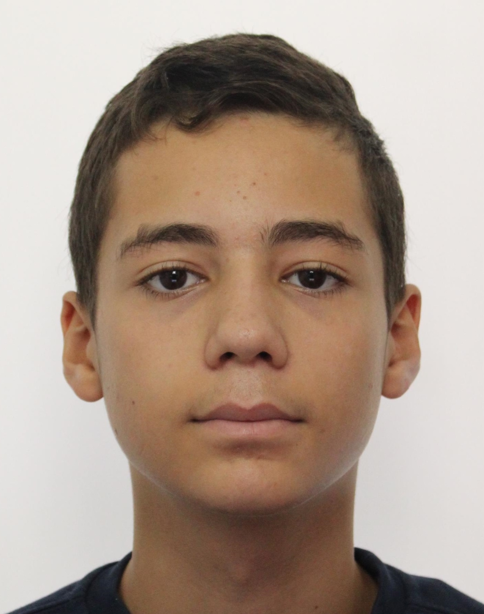

About Me
Hello, my name is Anas Hassein, and I am a first-year Computer Science student at Queen Mary University of London. My passion for computers and technology began at a young age, and I was drawn to Computer Science as a field of study due to its potential for shaping the future. My coursework has introduced me to programming, data structures, algorithms, and various other computer science concepts. I am currently honing my coding skills through projects and practical assignments. Additionally, I keep myself updated with the latest industry trends and developments. As a first-year student, I am eager to gain more practical experience and opportunities to apply my knowledge. After graduation, my goal is to secure a position in the tech industry, where I can contribute to developing innovative solutions and products that make a difference.Education
2015-2022 French Baccaleaureate - Lycee International de Londres Winston Churchill
2022-2025 Bsc - Queen Mary University of London